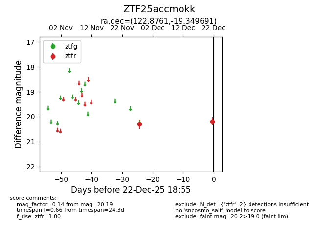
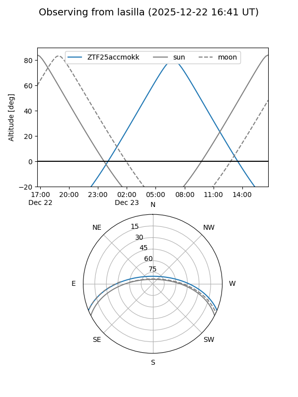
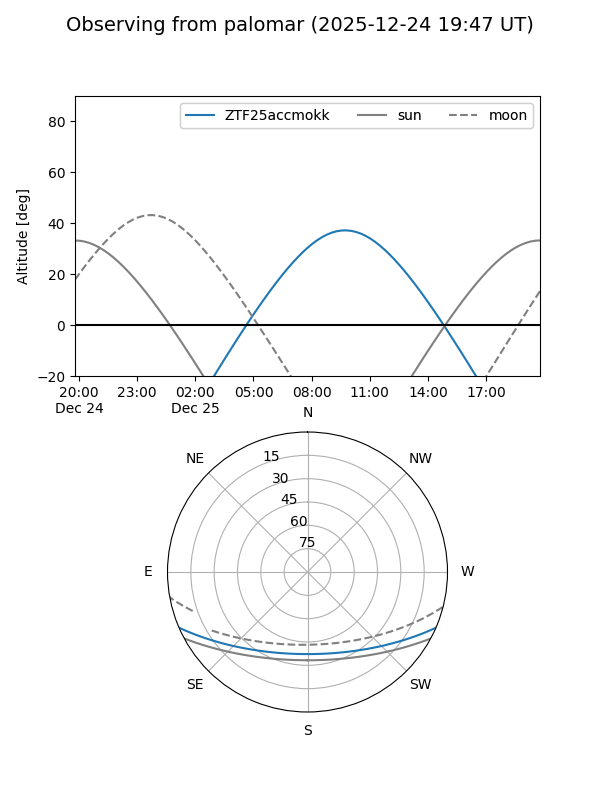

ZTF25accmokk
Target ZTF25accmokk at 2025-12-22 18:56
Aliases and brokers:
FINK: fink-portal.org/ZTF25accmokk
Lasair: lasair-ztf.lsst.ac.uk/objects/ZTF25accmokk
ALeRCE: alerce.online/object/ZTF25accmokk
alt names
ZTF25accmokk (ztf,fink_ztf)
Coordinates:
equatorial (ra, dec) = 122.8761,-19.34969
equatorial (HMS+DMS) = 08:11:30.26,-19:20:58.89
galactic (l, b) = (239.4393,+7.83646)
Flags:
Photometry:
last ztfr=20.19
2 ztfr detections
Lightcurve

Visibility


Additional plots